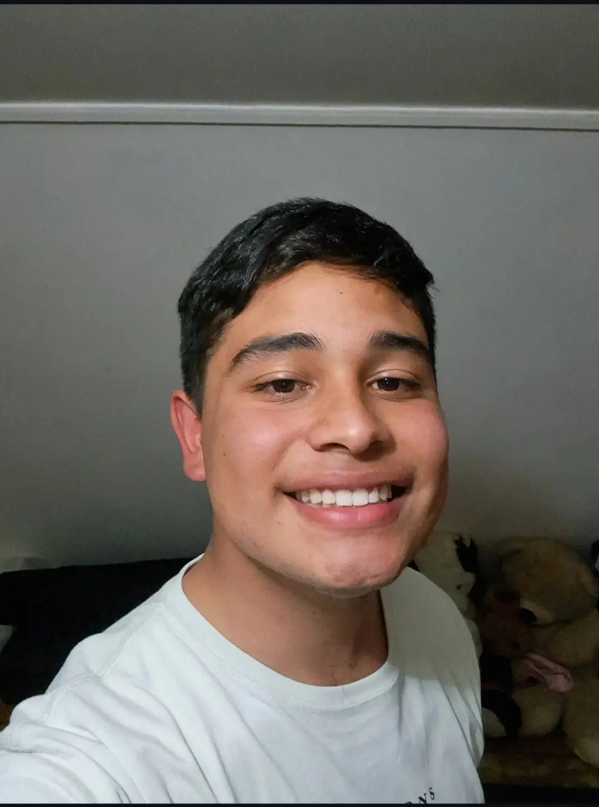

Tomas Gabriel Suarez Rojas | WDD 130

Hi there! My name is Tomas, I'm 21 years old and I'm from Chile. After serving as a missionary for The Church of Jesus Christ of Latter-day Saints in El Alto, Bolivia, I decided to pursue my passion for technology. Currently, I am a Software Development student at BYU-Idaho online through the BYU-Pathway Worldwide program. My goal is to become a skilled web developer, and I am dedicated to mastering the tools and languages necessary to build impactful digital experiences. I am excited to continue learning and growing in the tech industry!